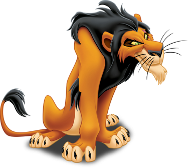

Simba. Filho do Rei, ele tem uma personalidade divertida, sempre está ao lado da sua melhor amiga, Nala. Quando adulto, tendo que assumir o reino, ele percebe que terá que ser responsável.
Ele era o rei das Terras do Reino e o pai do Simba. No meio de seu reinado, Mufasa foi morto por seu irmão invejoso, Scar, em um esforço para roubar o trono. Apesar de sua morte, Mufasa perdura na memória de seus entes queridos.

Scar provou ser extremamente sádico e impiedoso, convencendo seu próprio sobrinho, Simba, de que ele era o responsável pela morte de seu pai, Mufasa, e mais tarde passando a provocá-lo que ele mesmo era o responsável pela morte de Mufasa, o que também levou ao seu falecimento.
O adorável javali Pumba e seu camarada suricato Timão mantêm um estilo de vida sem preocupações, o "hakuna matata", que porém lhes traz muitos problemas na selva.